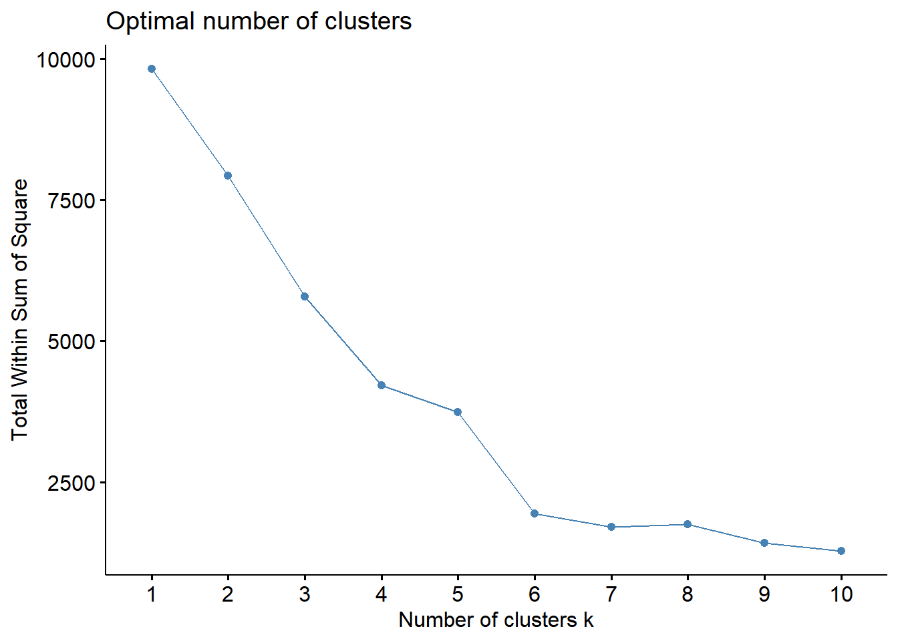

These are two datasets with Portuguese hotel demand data and each observation represents a hotel booking. One of the hotels is a resort hotel(40,060 observations) and other is a city hotel(79,330 observations).
What differentiated marketing strategy can attract the exiting customers ?
Segmenting all customers using K-mean clustering and then identifying recommendations for hotels by analyzing customer needs.
#data minig
library(dplyr)
hotel <- read.csv("hotel_bookings.csv")
resort <- filter(hotel, hotel == "Resort Hotel")
resort$meal_num <- ifelse(resort$meal == 'BB',1,ifelse(resort$meal == 'FB',2,ifelse(resort$meal == "HB",3,ifelse(resort$meal=='SC',4,0)))) #labels number on meal
resort$depo_num <- ifelse(resort$deposit_type == "No Deposit", 1, ifelse(resort$deposit_type == "Refundable", 2, ifelse(resort$deposit_type == "Non Refund", 3, 0)))#labels number on deposit type
resort$family <- ifelse(resort$children > 0 | resort$babies > 0, 1,0)
resort_demand <- filter(resort, adr > 20)There are 5 variables to figure out marketing strategy: Family & Meal Plan & Type of deposit & ADR & Paring space
Family: the customers brought their kids ?
*Accompanied kids: 1 & NO accompanied kids: 0
Meal Plan: what type of meal plan the customers prefered?
*No plan: 0 & BB(Breakfast and Bed): 1 & FB(Full Board):2 & HB(Half Board): 3 & SC(Self Catering): 4
Type of Deposit: What type of deposit the customers chose ?
Parking: How many parking spaces were required by customers?
ADR: Average Daily Rate(Dividing room revenue by rooms sold)
About 90% of customers didn’t bring children or babies and few customers brought 1 or 2 children
About 90% of customers chose 1(No Deposit)
About 70% of customers chose 1(Breakfast and beds) and about 20% of customer chose 3(Half Board) that means including two meals
Each room generates $50 to $100 per a day mostly
# Exploratory Data Analysis(EDA)
#install.packages("ggplot2")
library(ggplot2)
ggplot(resort_demand, aes(x = children)) +
geom_histogram(aes(y = after_stat(count)), binwidth = 5,
colour = "goldenrod2", fill = "goldenrod2")+ labs(y= "Number of customers", x = "1.1 Number of accompanied children")+ggtitle("Number of customers who accompanied children")+theme(plot.title = element_text(hjust = 0.5))ggplot(resort_demand, aes(x = babies)) +
geom_histogram(aes(y = after_stat(count)), binwidth = 1,
colour = "slateblue2", fill = "slateblue3")+ labs(y= "Number of customers", x = "Number of accompanied babies")+ggtitle("2.1 Number of customers who accompanied babies")+theme(plot.title = element_text(hjust = 0.5)) ggplot(resort_demand, aes(x = depo_num)) +
geom_histogram(aes(y = after_stat(count)), binwidth = 1,
colour = "aquamarine3", fill = "aquamarine3")+ labs(y= "Number of customers", x = "Type of Deposit")+ggtitle("2.2 Type of Deposit by Customers")+theme(plot.title = element_text(hjust = 0.5))ggplot(resort_demand, aes(x = meal_num)) +
geom_histogram(aes(y = after_stat(count)), binwidth = 1,
colour = "azure3", fill = "azure3")+ labs(y= "Number of customers", x = "Type of Meal Plan")+ggtitle("2.3 Type of Meal Plan by Customers")+theme(plot.title = element_text(hjust = 0.5)) ggplot(resort_demand, aes(x = adr)) +
geom_histogram(aes(y = after_stat(count)), binwidth = 5,
colour = "antiquewhite2", fill = "antiquewhite2")+ labs(y= "Number of customers", x = "Average Daily Rate")+ggtitle("2.4 Average Daily Rate by Customers")+theme(plot.title = element_text(hjust = 0.5))+ stat_bin(bins = 10)Distance of clusters is highly influenced by scale of variables, it is customary to normalize first. In our dataset, all variables are on not same scale(0,1), so normalization is necessary:
We need use elbow curve to figure out what is the optimal number of cluster. The graph looks like elbow shape and we need to find elbow point that is k-value where the elbow gets created. This is because increasing the value of “K” does not reduce WCSS(Within-Cluster Sum of Square)
We choose the elbow point which is 6. Even though we increased the k-value, it does not reduce WCSS
## Welcome! Want to learn more? See two factoextra-related books at https://goo.gl/ve3WBa
Cluster1: 3,868 Cluster2: 4,627 Cluster3: 5,413 Cluster4: 17,487 Cluster5: 5,892 Cluster6: 1,892
## family meal_num depo_num adr required_car_parking_spaces
## 1 3.0147988 0.1397502 -0.2196305 1.09393220 0.1735987
## 2 -0.3280724 -0.1281032 -0.2119857 0.08157423 2.4684493
## 3 -0.3316886 -0.4902237 -0.2190932 1.10299525 -0.3940615
## 4 -0.3316886 -0.5107956 -0.2208826 -0.62542327 -0.3951103
## 5 -0.3316886 1.8924213 -0.2200606 0.21926567 -0.3951103
## 6 -0.3243699 0.2667564 4.4699351 -0.51089310 -0.3951103## family meal_num depo_num adr required_car_parking_spaces
## 1 3.0147988 0.1397502 -0.2196305 1.09393220 0.1735987
## 2 -0.3280724 -0.1281032 -0.2119857 0.08157423 2.4684493
## 3 -0.3316886 -0.4902237 -0.2190932 1.10299525 -0.3940615
## 4 -0.3316886 -0.5107956 -0.2208826 -0.62542327 -0.3951103
## 5 -0.3316886 1.8924213 -0.2200606 0.21926567 -0.3951103
## 6 -0.3243699 0.2667564 4.4699351 -0.51089310 -0.3951103##
## 1 2 3 4 5 6
## 3868 4627 5413 17487 5892 1829## 1 2 3 4 5 6
## 1.000000000 0.001080614 0.000000000 0.000000000 0.000000000 0.002186987## 1 2 3 4 5 6
## 163.30238 102.13273 163.85000 59.41386 110.45245 66.33411## 1 2 3 4 5 6
## 1.000517 1.003674 1.000739 1.000000 1.000339 2.937124## 1 2 3 4 5 6
## 1.5144778 1.2896045 0.9855902 0.9683193 2.9859131 1.6211044## 1 2 3 4 5 6
## 0.2003619442 1.0088610331 0.0003694809 0.0000000000 0.0000000000 0.0000000000Note that the echo = FALSE parameter was added to the
code chunk to prevent printing of the R code that generated the
plot.